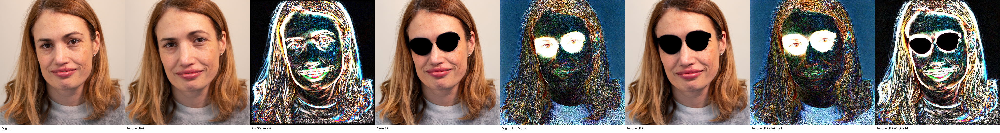
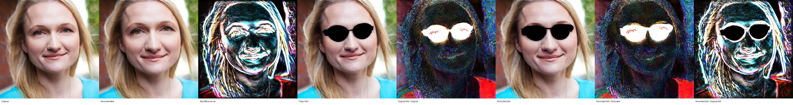
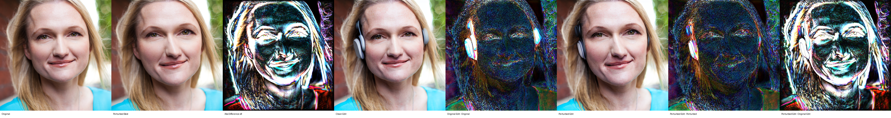
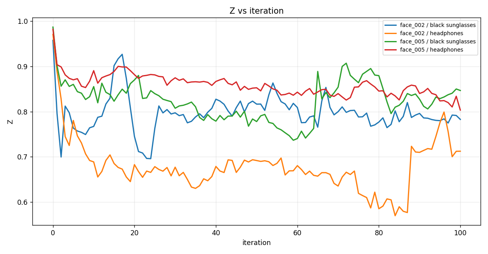
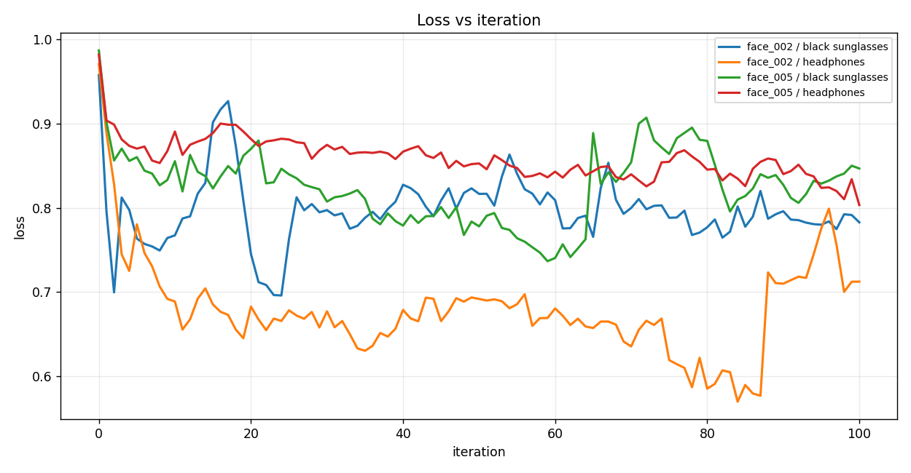
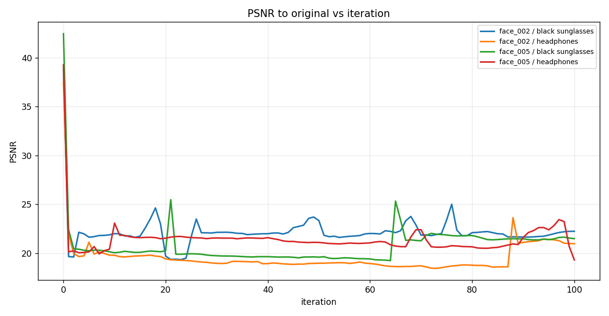
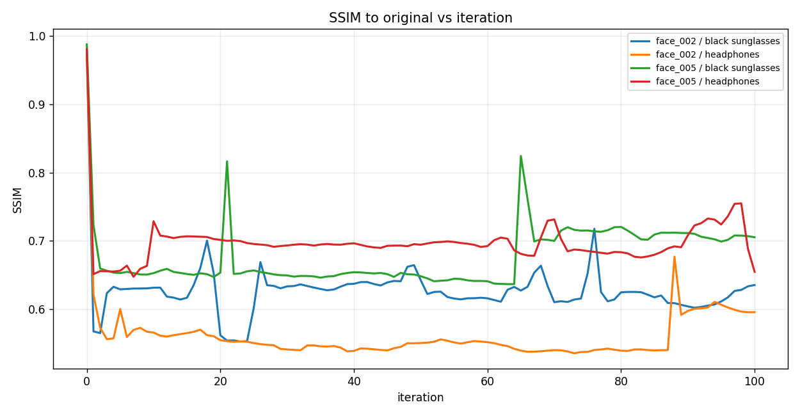
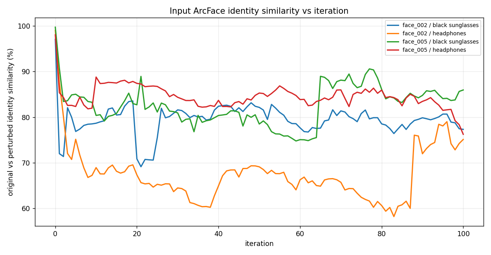
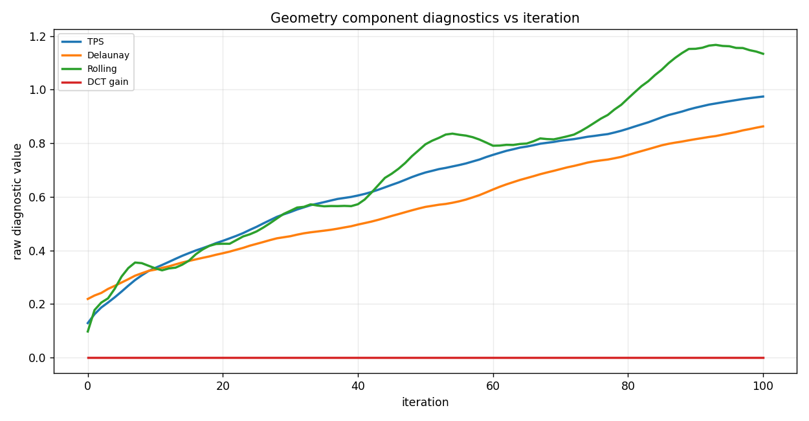

FACE4: Edited-output ArcFace White-box Optimization
Exact stock-equivalent InstructPix2Pix edit identity results with geometric perturbations
Author: Parth Katiyar
FACE4 optimizes Z = cosine_similarity between frozen ArcFace iResNet-100 embeddings of the clean InstructPix2Pix edit and the perturbed InstructPix2Pix edit. The loss is exactly loss = Z. InstructPix2Pix and ArcFace weights are frozen; only perturbation parameters are optimized. TPS, Delaunay, and rolling are coordinate perturbations. DCT is a blockwise image-frequency coefficient perturbation, not a flow field.
The iteration graph shows the exact stock-equivalent Z used for optimization. Normal decorated stock-pipeline Z is retained as a parity measurement; the configured correctness gate stops the run if the two values diverge beyond tolerance.
1. Run matrix
Four prompt-labeled cases are retained. The prompt conditions the differentiable InstructPix2Pix edit inside the optimization objective.
| face | prompt | final Z | best Z | final stock Z | best stock Z | best Z gap | final edit cosine sim | final edit score % | orig vs orig-edit % | perturbed vs best-edit % | orig vs perturbed % | SSIM | PSNR | edit output SSIM | max disp px | DCT gain mean abs | DCT energy change | fraction clamped | stock public edits |
|---|---|---|---|---|---|---|---|---|---|---|---|---|---|---|---|---|---|---|---|
| face_002 | add black sunglasses | 0.7826 | 0.6957 | 0.7826 | 0.6985 | 0.0028 | 0.7826 | 78.258 | 66.800 | 75.147 | 70.580 | 0.6349 | 22.243 | 0.4962 | 19.335 | None | None | 0.1382 | 1.0000 |
| face_002 | add headphones | 0.7122 | 0.5694 | 0.7115 | 0.5711 | 0.0017 | 0.7115 | 71.151 | 93.824 | 95.631 | 60.463 | 0.5952 | 20.970 | 0.4482 | 19.497 | None | None | 0.1382 | 1.0000 |
| face_005 | add black sunglasses | 0.8467 | 0.7365 | 0.8463 | 0.7389 | 0.0024 | 0.8463 | 84.632 | 60.023 | 74.406 | 74.774 | 0.7050 | 21.490 | 0.5839 | 17.628 | None | None | 0.1513 | 1.0000 |
| face_005 | add headphones | 0.8032 | 0.8032 | 0.8033 | 0.8033 | 0.0001 | 0.8033 | 80.330 | 93.424 | 97.039 | 76.237 | 0.6543 | 19.313 | 0.5595 | 18.114 | None | None | 0.1447 | 1.0000 |
2. Case image strips
face_002 — add black sunglasses

outputs/edited_output_identity_2/20260713_103809_edited_output_identity_all_sequential/runs/edited_output_identity/instructpix2pix_arcface_iresnet100/face_002__add_black_sunglasses
face_002 — add headphones

outputs/edited_output_identity_2/20260713_103809_edited_output_identity_all_sequential/runs/edited_output_identity/instructpix2pix_arcface_iresnet100/face_002__add_headphones
face_005 — add black sunglasses

outputs/edited_output_identity_2/20260713_103809_edited_output_identity_all_sequential/runs/edited_output_identity/instructpix2pix_arcface_iresnet100/face_005__add_black_sunglasses
face_005 — add headphones

outputs/edited_output_identity_2/20260713_103809_edited_output_identity_all_sequential/runs/edited_output_identity/instructpix2pix_arcface_iresnet100/face_005__add_headphones
3. Graphs
{kind=link}

{kind=link}

{kind=link}

{kind=link}

{kind=link}

{kind=link}
